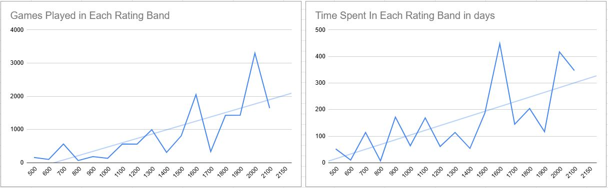

A Win Against a Grandmaster (in a simul)
What is a Grandmaster?
Chess grandmasters are the strongest chess players in the history of chess. Most people are aware of this fact, but what many people don't know is how good a chess grandmaster is. The requirments to become a Grandmaster are:
- An International Rating of over 2500 (see chart below)
- 3 Grandmaster Norms (perform at ~ a 2600 level in 3 events with other Grandmasters present)
Let's talk a second about how the rating system works. It's all about expectations - if you're expected to win and lose, your rating number will go down. The amount of change is based on the size of the upset in the result. If you're rated 1500 playing a 900 - the 900 rated player would have (according to the rating formula) a 3% chance of winning the game. If they do win the game, their rating would rise while yours falls. Specifically, the 1500 would lose about 20 points and the 900 would gain those 20 points in return. Two equally rated players would change ~15 points, for reference. Magnus Carlsen (labled on the graph at 2862) has been the best player in the world for about 10+ years, and a beginner is about 900 or below when they start.

A Grandmaster Norm is based on something called a performance rating. Your performance rating is the number you'd be given assuming that this was your only event so far. So, if you played at a Grandmaster level - you'd be given a 2500 performance rating. If you played like a total beginner, you earn a 900 or below performance rating (this is very painful, speaking from experince).
Progress in Chess
I was curious, while writing the above section, how many wins (in a row) I was away from being Magnus Carlsen. I did the math and it came out to ~80 wins in a row. This may sound like a lot of games, and it is, but it gets even worse than that. As you become a stronger player, so does your competition become stronger. Each point you gain only makes it harder to gain more points. The following graph and data show this in my own online games, they're taken from my own progress in the chess.com rapid pool:

See the raw data here: https://docs.google.com/spreadsheets/d/1t0CZhKZtStiEKE7wtcqyhR03kO7dso9swh4trGoeJBQ/edit?usp=sharing
So, even 80 games isn't really a clear picture. I'd have to win 80 games in a row with increasing difficulty for each game. This is quite the impossible task. This is the core reason why Grandmasters are so revered in the chess community, the distance between such a player and the average joe is a massive chasm. The sheer scale of the gap would remind one the the Grand Canyon - if such a gap we're the be visible.
Intro to Chess Concepts
My goal with this article is to show you the game I played against Grandmaster Kayden Troff, and hopefully for you to understand some of the chess ideas in that game. The game has some complex chess ideas - so the following few sections are going to define chess terms. If you're already familiar with chess - feel free to skip this section!
Chess Notation
Naming the Squares
Chess players use a system similar to Battleship to name the squares on the board. White's bottom left corner is a1, and white's top right corder is h8. You can count across from a to get the first part of the square name, and count up from 1 to get the second part.

For example, the white queen starts on d1 and the black king starts on e8. If white moves their king's pawn up two squares, it lands on e4. This is a key component to the next step:
Naming The Moves
If you wish to regail eveyone with your chess tales, you're going to have to remember the game. Even worse, you're going to have to talk about it with others. The standard way of doing this is called Standard Algebraic Notation, or SAN for short. The basic idea is simple, state the piece you moved with it's first character and state the square you moved the piece to. If you're capturing a piece, you add an "x". For checks you include a "+". For a checkmate, you write a "#".
So,
- Moving a Queen to f3 would be Qf3
- Moving a Rook to h5 would be Rh5
- A queen capturing on c4 would be Qxc4.
- A queen checking on a4 would be Qa4+
- A queen capturing on f7 with checkmate would be Qxf7#
Don't knights and kings have the same character?
Yes, they do. That is why the symbol for a Knight is N!
Some of the moves below don't have a piece listed?
Chess players cannot keep anything simple. When moving pawns, you don't list a piece. You simply list the square. Annoyingly, if the pawn is capturing you then state the letter of the square the pawn is on. So a pawn on b3 capturing on c4 would be bxc4. This is said 'b takes c4'.
For more information about Chess Notation, see this link: https://www.chessable.com/blog/chess-notation-for-beginners/
Basic Strategy
There are three main goals at the very start of every chess game:
- Mobilize your pieces
- Control the middle
- Secure your King
Mobilize your Pieces
One lens to understand chess through is war, or a battle. When fighting starts, it's common sense to think that the side with more and more powerful forces taking part will prevail. This concept is also true in chess - if one player is playing with 5 pieces and the other with 0, you can guess what's about to happen to the undeveloped player. Every chess game between strong players you see will contain those players getting all of their pieces off their starting squares in the first 10 moves. There are exceptions, but they are rare and usually quite complex.

Control the Middle
Most pieces are at their best in the middle of the board. There are two reasons for this: A) Because they usually control the most squares there and B) because their routes to other locations on the board are shorter.

The central knight controls 8 square, the knight stuck to one edge controls 4, the knight stuck to both edges only controls 2.
The other reason is also important. In the folling game the center pawns block all of the black pieces (queen, bishop, and 2 rooks) from reacing the side of the board where the black king resides. For this reason I was able to sacrifice a bishop and give checkmate:

Secure your king
We've already seen some examples of the king getting checkmated in the middle. If you leave it there too long, it can be attacked from all sides of the board. If you make a fortress on one side by castling there - it's a lot harder to checkmate. You will see basically every strong player castle their king basically every game.
Basic Tactics
A Chess Tactic is a short exchange of moves that results on one of the players gaining some type of advantage. Often times this means winning a piece, queen, or even the whole game (by checkmate). These moves are always forcing, meaning they're Cheking the King, Capturing a Peice, or Making a Threat. The following are the basic Tactical Themes present in this game:
Trapped Piece
A trapped piece has no safe squares left on the board. Every possible square it can move to would lose the piece. This can happen with every kind of non-pawn piece, but it happens with queens and bishops very often. Below is an example of a bishop getting trapped by pawns. Watch carefully, the bishop has no safe squares!

Remove the Defender
Another type of chess tactic is called Remove the Defender. This occors when you capture a defender of one piece, forcing your opponent to capture back, only to then take the piece it was defending. As the piece that was defending has now been captured, the defended peice has become undefended! Here is an example:

Grandmaster Kayden Troff - William Dann, Grand Knights Chess Academy 2025
If you're struggling to play along with the moves, try looking at the game on a board. You can use a physical one, or a digital one. I have provided a link for you to scroll through the game here: https://lichess.org/study/22kskrU5. Having this open in another tab could help you read the chess notaion!
1. b3 e5
2. Bb2 Nc6
3. e3 d5
4. Nf3 Bd6
White has mobilized two of their pieces, both attacking my pawn on e5. Black is happy, as they control the e5 center point with their pawn. White is happy because they're putting dangerous pressure on that point. If black isn't careful, black will lose the pawn on e5 and the center will fall into white control!

5. Bb5 f6
6. c4 Ne7

Black has defended the e5 point with a pawn at f6. This makes a very hard structure to crack, called a Pawn Chain. The e5 pawn is protected by the f6 pawn, who is protected by the g7 pawn. If white wanted to win the e5 point, they would first have to unravel the pawn chain all the way at g7. That point is very far into black's camp (white cannot easily attack g7), so they switch gears to an easier target: the d5 pawn!
Notice how this entire game so far is about control of the center!
7. Nc3 a6
8. Bxc6+ bxc6
9. d4 e4

White went back to attacking the e5 pawn, this time using the pawn on the d file (files are the up-and-down lines). I had to push the pawn forward to avoid losing it. The upside of this is that it controls more squares of my opponent's territory. The downside is that, because it's closer to my opponent's territory, it's much easier for them to remove. White is slowly trying to unravel my position in the center. That's what chess is all about!
10. c5 exf3
11. Qxf3 Bf5
12. cxd6 cxd6

He let me take his knight on f3 with a pawn because my bishop on d6 was a Trapped Piece. See the discussion above in the Basic Tactics section for more information! In the end we have just traded a bishop for a knight, which is in general an equal trade.
13. O-O h5 !?

This is a pure and simple trap! My sneaky plan is to turn the white queen into a Trapped Piece by first moving the bishop to g4, then the knight to f5. After this, the queen would have no safe squares. If you're unsure, play it out on a real board and try to escape! My experince from giving simuls (where many games are played all at once) is that it's easy to miss sneaky threats like this. I didn't really expect him to fall for it, but I wanted to give him the chance to go wrong.
14. Ba3 Bg4 !

He responded to my trap very well. Now if I go through with it, the bishop is adding an attacker to my pawn on d6. The queen could just capture on that square, both escaping and winning a pawn! He turned my threat into a counter-threat, which is a common occorance when playing a stronger player.
15. Qf4 Nc8
16. e4 Qa5
17. Na4 O-O

White has forced my knight to sit on the edge (remember about mobilizing the peices), has good control of the center with their two pawns, and has opened up some lines to my king! Things are starting to look dangerous for me, I cannot lie. White is doing very well.
18. f3 Bd7
19. Bxd6 ? g5 !
This is a Remove the Defender tactic, like we mentioned above. The queen is the only defender of the bishop, and the g5 pawn is removing it as a defender. The queen can retreat to g3 and keep defending the bishop, but the h pawn I pushed earlier can march to h4, fully removing the queen from defense of the bishop. If you're struggling with this, play it out on a real board. You cannot save the bishop in any line!
20. Bc7 Qxa4
21. Qg3 ? Qxd4+

If you notice, the black team is now up a piece. They have a knight on c8 that white does not have. This is quite a large advantage in a game between strong players. I'm going to finish the coverage here, simply leaving you with a gif of the technique to finish the game.
In the end, being up a peice was easy to convert. I have to be careful to not fall for any traps, but the extra firepower is decisive no matter who your opponent is.

22. Kh1 h4
23. Qe1 Ra7
24. Rd1 Qc5
25. Ba5 Re8
26. Bc3 Qf8
27. Qd2 Be6
28. f4 Nd6
29. fxg5 Nxe4
30. Qe3 Rh7
31. gxf6 Bg4
32. Qd4 Qf7
33. Rde1 Ng3+
34. Kg1 Ne2+
35. Rxe2 Bxe2
36. Re1 Qa7
37. Kf2 Qxd4+
38. Bxd4 Bh5
39. Rc1 Re2+
40. Kf1 Rc7
41. a4 Kf7
42. h3 Rc8
43. Bf2 Re4
44. Kg1 d4
45. Rc5 Be2
46. Be1 Kxf6
47. Bd2 Re5
48. Rc2 c5
49. Ba5 Bd1
50. Rf2+ Rf5
51. Rb2 Rb8
White resigns.
Game Summary
Kayden was able to outplay me easily in the opening of this game. He eventually got better control of the center, better peices, and my king was a bit exposted. The only thing I had going for me was some danger based on Trapped Piece tactics and Remove the Defender tactics. He didn't fall for the Trapped Piece tactic, but he missed the Remove the Defender one by taking on d6 with the bishop. I knew from experince that it's easy to much such a thing playing a simul, as I'd given them myself, and I got a bit lucky when he fell into the little trap.
To my credit, I think I played the position after that well. He made quite a few annoying threats to try and make it back into the game - but I was able to survive those and come out with the win. It takes an astronomical amount of work to become a Grandmaster, and Kayden is clearly one of the best players on the planet - sometimes chess is just hard.
At the end of the day I'm happy with my game. It could have been better in the opening - but a win is a win even if it's a little tricky. This is the first time I've beaten such a strong player - and hopefully not the last!